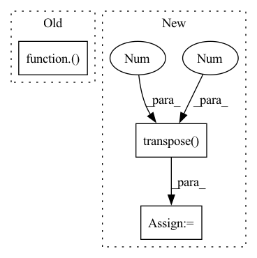

Pattern ID :9280

Before Change
igt = igt.to(device)
output = model(template, source)
loss_val = ChamferDistanceLoss()(template, output["transformed_source"])
test_loss += loss_val.item()
count += 1
After Change
loss_val = torch.nn.functional.mse_loss(torch.matmul(output["est_R"].transpose(2, 1), R_ab), identity) \
+ torch.nn.functional.mse_loss(output["est_t"], translation_ab[:,:,0])
cycle_loss = torch.nn.functional.mse_loss(torch.matmul(output["est_R_"].transpose(2, 1), R_ba), identity) \
+ torch.nn.functional.mse_loss(output["est_t_"], translation_ba[:,:,0])
loss_val = loss_val + cycle_loss * 0.1
test_loss += loss_val.item()
count += 1
In pattern: SUPERPATTERN
Frequency: 3
Non-data size: 3
Instances
Fragment ID: 33357372
Project Name: vinits5/learning3d
Commit Name: 9c93ae0ba4eb39cf0fbb57bbab5b3eabf7e0134a
Time: 2020-04-12
Author: vinitsarode5@gmail.com
File Name: examples/train_dcp.py
M Class Name: AnonimousClass
N Class Name: AnonimousClass
M Method Name: test_one_epoch(3)
N Method Name: test_one_epoch(3)
M Parent Class:
N Parent Class:
M File Name: examples/train_dcp.py
N File Name: examples/train_dcp.py
M Start Line: 64
M End Line: 69
N Start Line: 62
N End Line: 73
'>
Before Change
igt = igt.to(device)
output = model(template, source)
loss_val = ChamferDistanceLoss()(template, output["transformed_source"])
// print(loss_val.item())
// forward + backward + optimize
optimizer.zero_grad()
After Change
loss_val = torch.nn.functional.mse_loss(torch.matmul(output["est_R"].transpose(2, 1), R_ab), identity) \
+ torch.nn.functional.mse_loss(output["est_t"], translation_ab[:,:,0])
cycle_loss = torch.nn.functional.mse_loss(torch.matmul(output["est_R_"].transpose(2, 1), R_ba), identity) \
+ torch.nn.functional.mse_loss(output["est_t_"], translation_ba[:,:,0])
loss_val = loss_val + cycle_loss * 0.1
// print(loss_val.item())
// forward + backward + optimize
'>
Fragment ID: 33357368
Project Name: vinits5/learning3d
Commit Name: 9c93ae0ba4eb39cf0fbb57bbab5b3eabf7e0134a
Time: 2020-04-12
Author: vinitsarode5@gmail.com
File Name: examples/train_dcp.py
M Class Name: AnonimousClass
N Class Name: AnonimousClass
M Method Name: train_one_epoch(4)
N Method Name: train_one_epoch(4)
M Parent Class:
N Parent Class:
M File Name: examples/train_dcp.py
N File Name: examples/train_dcp.py
M Start Line: 92
M End Line: 97
N Start Line: 96
N End Line: 107
'>
Before Change
def forward(self, g_t: torch.Tensor) -> torch.Tensor:
train_bs, class_num = g_t.size(0), g_t.size(1)
g_t_temp = g_t / self.temperature
g_t_temp_softmax = nn.Softmax(dim=1)(g_t_temp)
target_entropy_weight = entropy(g_t_temp_softmax).detach()
target_entropy_weight = 1 + torch.exp(-target_entropy_weight)
target_entropy_weight = train_bs * target_entropy_weight / torch.sum(target_entropy_weight)
c_matrix = g_t_temp_softmax.mul(target_entropy_weight.view(-1,1)).transpose(1,0).mm(g_t_temp_softmax)
After Change
entropy_weight = entropy(predictions).detach()
entropy_weight = 1 + torch.exp(-entropy_weight)
entropy_weight = (batch_size * entropy_weight / torch.sum(entropy_weight)).unsqueeze(dim=1) // batch_size x 1
class_confusion_matrix = torch.mm((predictions * entropy_weight).transpose(1, 0), predictions)
class_confusion_matrix = class_confusion_matrix / torch.sum(class_confusion_matrix, dim=1)
mcc_loss = (torch.sum(class_confusion_matrix) - torch.trace(class_confusion_matrix)) / num_classes
return mcc_loss
'>
Fragment ID: 33357371
Project Name: thuml/transfer-learning-library
Commit Name: 7f63cd30ea0e7cf8961db90d2af8630e2429b434
Time: 2020-08-28
Author: 13126830206@163.com
File Name: dalib/adaptation/mcc.py
M Class Name: MinimumClassConfusionLoss
N Class Name: MinimumClassConfusionLoss
M Method Name: forward(2)
N Method Name: forward(2)
M Parent Class: nn.Module
N Parent Class: nn.Module
M File Name: dalib/adaptation/mcc.py
N File Name: dalib/adaptation/mcc.py
M Start Line: 17
M End Line: 23
N Start Line: 41
N End Line: 46